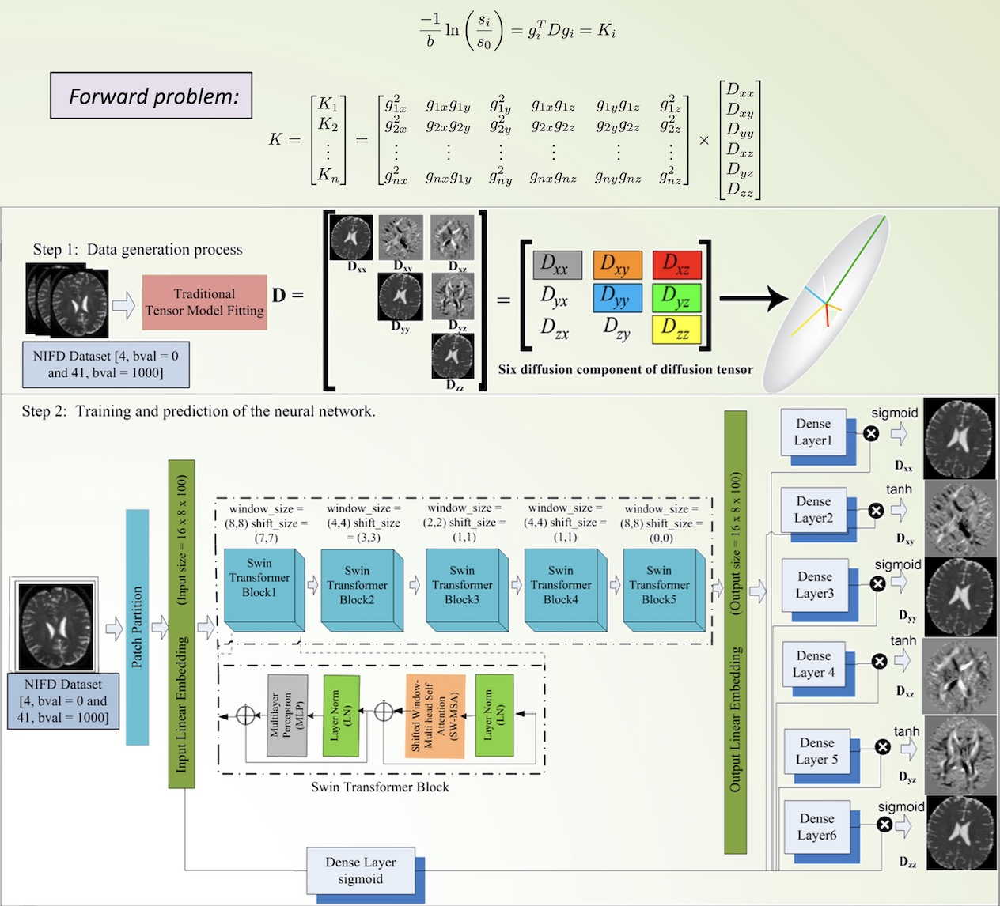
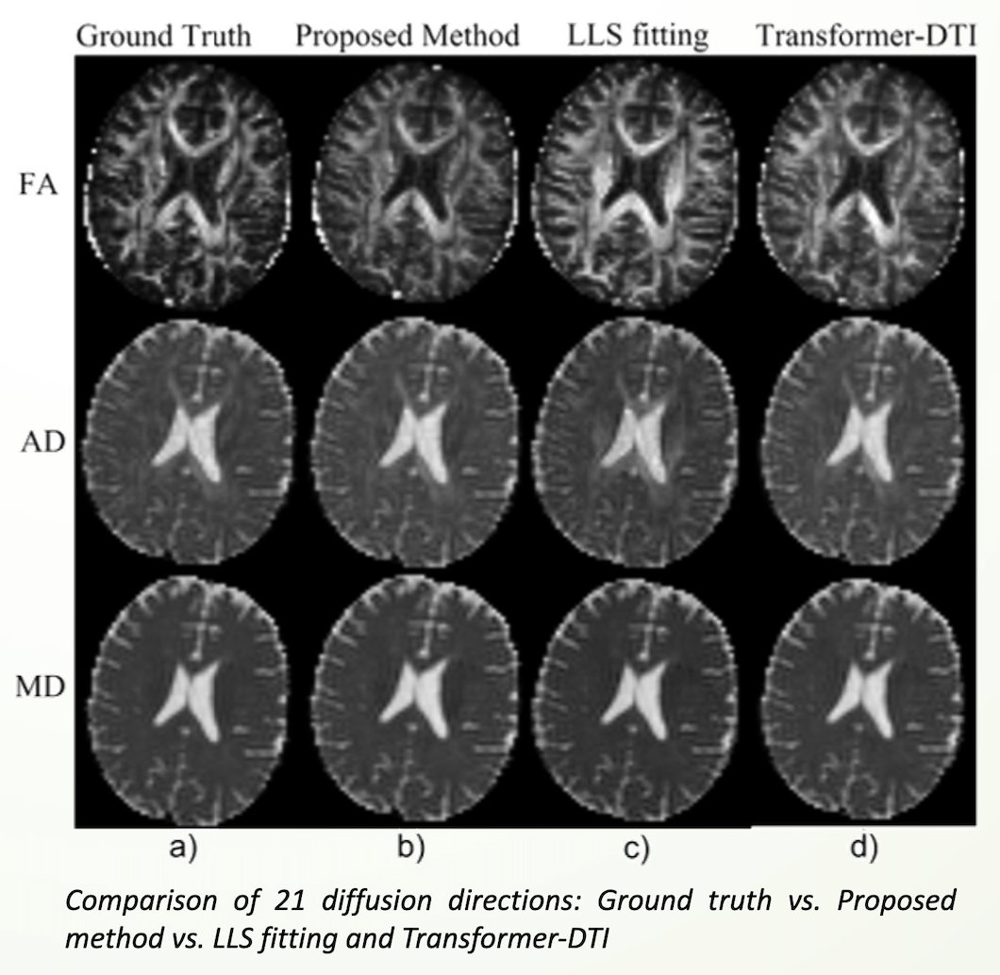
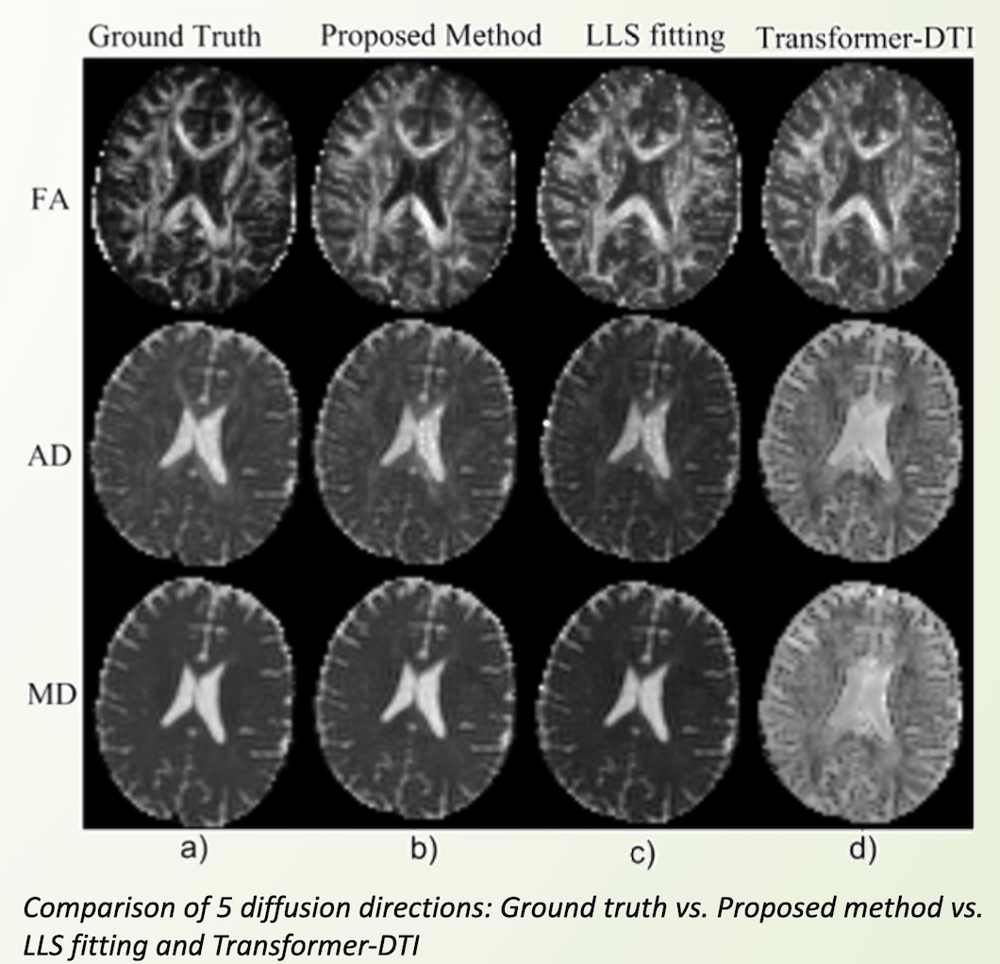
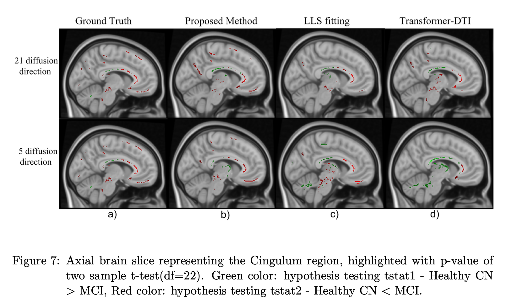
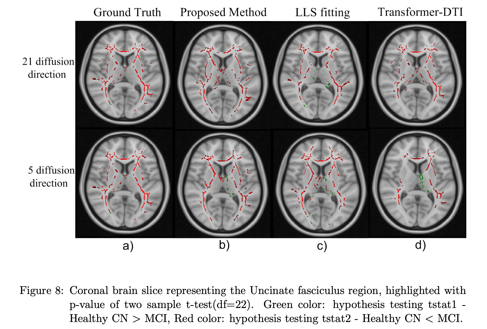

A structure-aware adaptive kernel denoising method for high b-value diffusion MRI that dynamically adjusts kernel geometry per-voxel using gradient-informed structural priors, preserving sharp tissue boundaries while aggressively suppressing noise in homogeneous regions.
We invent a gradient-to-kernel mapping algorithm that clusters voxel-wise gradient magnitudes via k-means and monotonically assigns discrete odd-integer kernel sizes — small kernels for high-gradient tissue boundaries, large kernels for homogeneous regions. This generates a per-voxel kernel map that autonomously adapts MPPCA denoising to local anatomical complexity across the full brain volume. Delivered 18% SNR gain with 96% tissue boundary preservation vs. fixed-size MPPCA baselines on HCP data at b-values of 5000–10000 s/mm².
A novel graph neural network integrating Autoregressive Moving Average (ARMA) spectral filtering with reconstruction-driven regularisation — the first approach to jointly address both over-smoothing and over-squashing in sparse-label neuroimaging graphs.
The framework represents entire cohorts as connected graphs where nodes encode neuroanatomical features and edges capture inter-subject similarity, enabling robust disease pattern extraction from limited training data. ARMA convolutions produce rational filters more expressive than standard polynomial filters, capturing long-range cortical dependencies without parameter explosion. Achieved 98.3% accuracy for CN vs. MCI and 99.7% for CN vs. AD classification on ADNI (>3% above GCN/GAT baselines).



This research presents a novel deep learning framework for early diagnosis of Frontotemporal dementia (FTD), a devastating neurodegenerative disorder affecting the frontal and temporal lobes of the brain. FTD leads to cognitive decline and behavioral changes, occurring in approximately 15-22 people per 100,000 worldwide (1.2-1.8 million people globally). Early and accurate diagnosis is crucial for timely interventions and appropriate patient care.
Our approach utilizes sparse diffusion measures extracted from neuroimaging data combined with advanced deep learning techniques to automatically learn relevant features from the data. The experimental results demonstrate promising potential in effectively distinguishing between healthy individuals and those with FTD, improving diagnostic accuracy and paving the way for future research in this critical area.


Our research investigates using Transformer-based deep learning to accelerate diffusion tensor imaging (DTI) processing and improve early Alzheimer's disease diagnosis. By applying advanced attention mechanisms, we've developed a model that generates critical quantitative measures using significantly fewer diffusion directions than traditional methods.
Our Swin-Transformer framework successfully generates fractional anisotropy (FA), axial diffusivity (AxD), and mean diffusivity (MD) measurements using just 5 and 21 diffusion directions. Testing on the Alzheimer's Disease Neuroimaging Initiative (ADNI) dataset demonstrates that our approach outperforms traditional linear least square methods while reducing scanning time by more than half. This breakthrough has significant implications for improving both the accessibility and accuracy of early AD diagnosis in clinical settings.